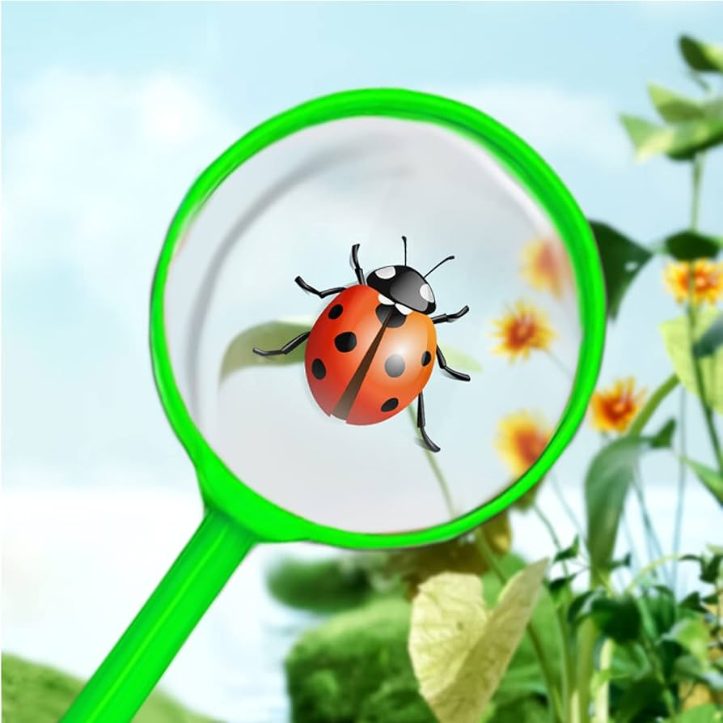

¡Hola, mi nombre es Marla y soy tester de software!
Me apasiona el mundo del software y me entusiasma la idea de contribuir a la creación de productos de
alta calidad.
Durante mi formación académica en he adquirido una sólida base en los principios fundamentales del
testing de software, incluyendo:
- Pruebas funcionales y no funcionales: Tengo experiencia en la creación y
ejecución de pruebas para verificar que el software cumpla con los requisitos funcionales y no
funcionales especificados.
- Metodologías de testing: Estoy familiarizado con diversas metodologías de
testing, como Agile, Waterfall y Kanban, y puedo adaptar mi enfoque a las necesidades
específicas de cada proyecto.
- Herramientas de testing: Tengo experiencia en el uso de diversas herramientas
de testing, como TestLink, Postman y Cypress, para automatizar pruebas y agilizar el proceso de
testing
- Defectos y seguimiento de errores: Soy capaz de identificar, documentar y
reportar defectos de manera efectiva, utilizando herramientas de seguimiento de errores como
Jira o Trello.
Además de mis conocimientos técnicos, también cuento con habilidades blandas que me permiten trabajar
de manera efectiva en equipo, como comunicación, trabajo en
equipo, resolución de problemas y aprendizaje
continuo.
Actualmente estoy matriculada en el Nivel 1 del curso Jóvenes a Programar, en la
especialidad de Desarrollo Web, el cual cuenta con un programa de estudio muy
completo, donde se imparten los contenidos técnicos en combinación con el fortalecimiento de las
competencias transversales y el idioma inglés.
Estoy convencida de que mis habilidades y experiencia me convierten en un valioso activo para
cualquier equipo de testing, ya que soy una trabajadora dedicada, motivada, con un gran interés en
la superación profesional y el crecimiento en la industria del software.